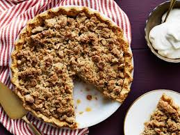

Dutch Apple Pie

Description
This Dutch Apple Pie recipe has the best apple flavor. A flaky, buttery crust on bottom, cooked apple filling in the center, and the most amazing golden-crisp, buttery crumb streusel topping.
Ingredients
- single pie crust
- lemon juice
- apples
- brown sugar
- granulated sugar
- flour
- salt
- cinnamon
- nutmeg
- cardamom(optional)
- vanilla
- butter
Steps
- In a medium bowl, mix 1 cup flour and the salt. Cut in shortening, using pastry blender, until particles are size of small peas. Sprinkle with cold water, 1 tablespoon at a time, tossing with fork until all flour is moistened and pastry almost leaves side of bowl. Gather pastry into a ball. Shape into flattened round on lightly floured surface. Wrap flattened round of pastry in plastic wrap, and refrigerate about 45 minutes or until dough is firm and cold, yet pliable.
- Heat oven to 400 degrees F. On surface sprinkled with flour, using floured rolling pin, roll pastry dough into circle 2 inches larger than 9-inch pie plate. Fold pastry into fourghs; place in pie plate. Unfold and ease into plate, pressing firmly against bottom and side and being careful not to stretch pastry, which will cause it to shrink when baked. Trim overhanging edge of pastry 1 inch from rim of pie plate. Fold and roll pastry under, even with plate; flute as desired.
- In a large bowl, toss filling ingredients. Pour into pie plate, moulding apples toward center.
- In large bowl, toss filling ingredients. Pour into pie plate, moulding apples toward center.
- In medium bowl, use pastry blender or fingers to mix butter, 1 cup flour and the brown sugar until a crumb forms. Sprinkle evenly over top of pie. Sprinkle 1 tablespoon granulated sugar on top.
- Bake 45 to 55 minutes or until pie crust and crumb topping are deep golden brown and filling begins to bubble. Transfer to cooling rack to cool